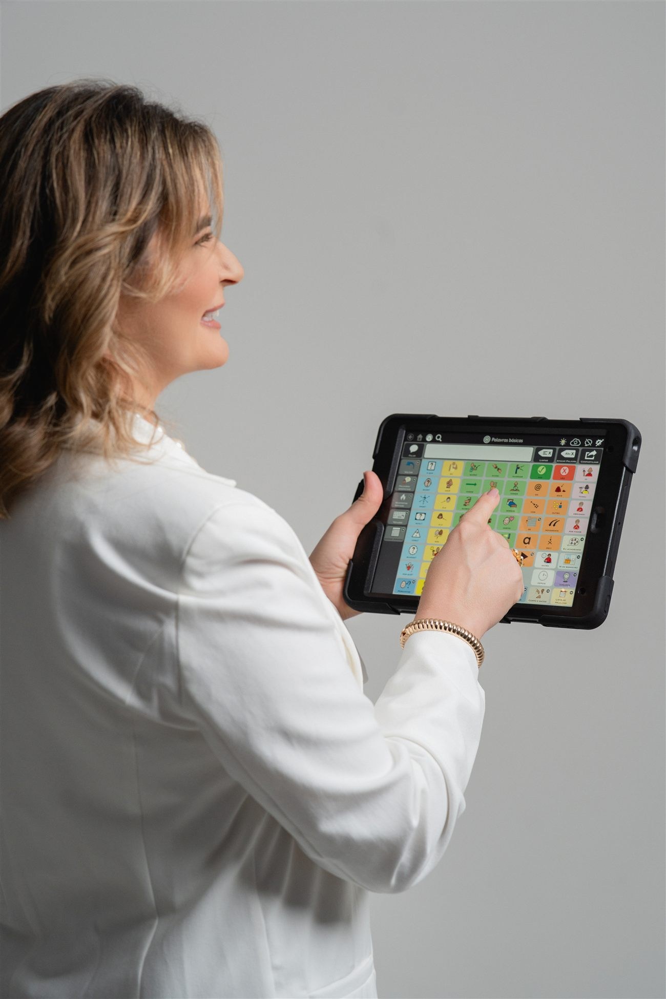

Toda criança tem algo a dizer.
Sou Lidijane Araújo Galvão. Atendo crianças com autismo e Necessidades Complexas de Comunicação, e formo os profissionais que cuidam delas, com Comunicação Aumentativa e Alternativa baseada em evidências.
supervisionadas
A prancha é consequência de uma boa avaliação, nunca o ponto de partida. O símbolo é a ferramenta; a comunicação é o objetivo.
Clínica, supervisora e professora.
Especialista em CAA para crianças com Necessidades Complexas de Comunicação, sobretudo no autismo. Implemento, supervisiono e formo profissionais na prática, com o raciocínio clínico no centro de cada decisão.
- 01Especialista em Comunicação Aumentativa e Alternativa
- 02Especialista em Linguagem e Distúrbios de Aprendizagem
- 03Aprimoramento em Transtornos dos Sons da Fala
- 04Membro da ISAAC Brasil · Docente de pós-graduação
Uma trajetória feita dentro da clínica.
Não é teoria solta da internet. É a experiência de quem atende, supervisiona e capacita equipes todos os dias.
fonoaudiólogas supervisionadas em todo o Brasil
treinamentos para equipes multidisciplinares
formações complementares em métodos de referência
Serviços clínicos especializados
Atendimentos conduzidos diretamente pela Lidijane para famílias que buscam um caminho claro para a comunicação, e consultorias para fonoaudiólogas e equipes que buscam segurança técnica.
Avaliação em CAA
Entendo como a criança se comunica hoje e qual sistema faz sentido para ela, antes de qualquer prancha.
02Terapia fonoaudiológica
Intervenção contínua baseada em evidências para crianças com autismo e NCC, com família e escola no processo.
03Supervisão clínica
Discussão de casos reais e raciocínio clínico para fonoaudiólogas tomarem decisões seguras em CAA.
04Treinamento de equipes
Capacitação prática para escolas, clínicas multidisciplinares e equipes terapêuticas.
CAA: Para Além de Pictogramas
Da Literatura à Expertise Clínica
O método completo para fonoaudiólogos dominarem o raciocínio clínico da CAA — da avaliação ao acompanhamento prático sem pranchas engavetadas.
Ferramentas de CAA
Pranchas, checklists, PDFs para download, materiais completos e recomendações de aplicativos e recursos utilizados na clínica.
O comunicador não ensina linguagem sozinho. Quem muda a evolução da criança é a forma como a CAA é implementada.
Lidijane Araújo Galvão
